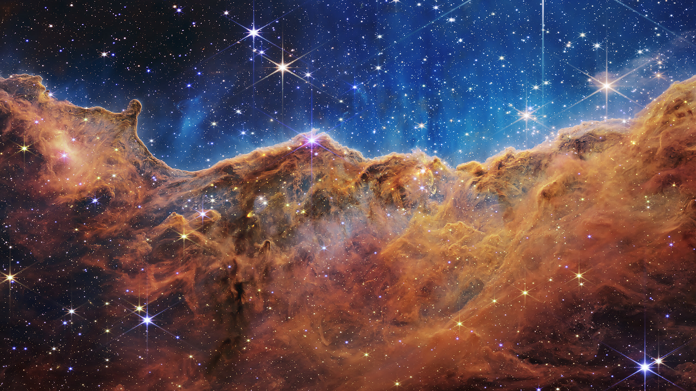
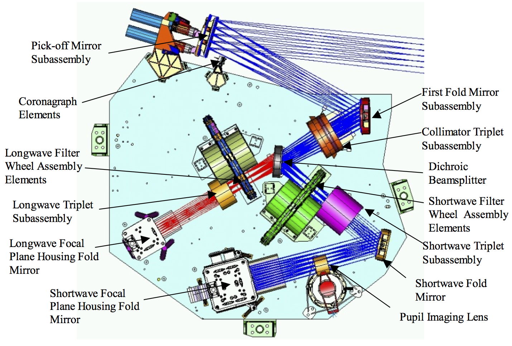
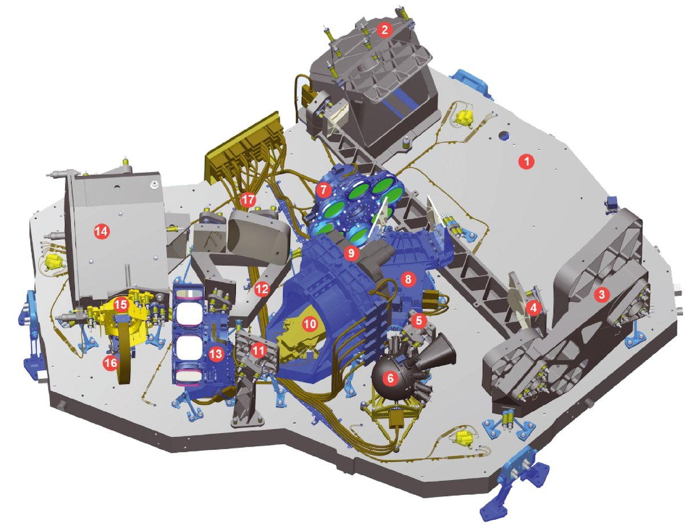
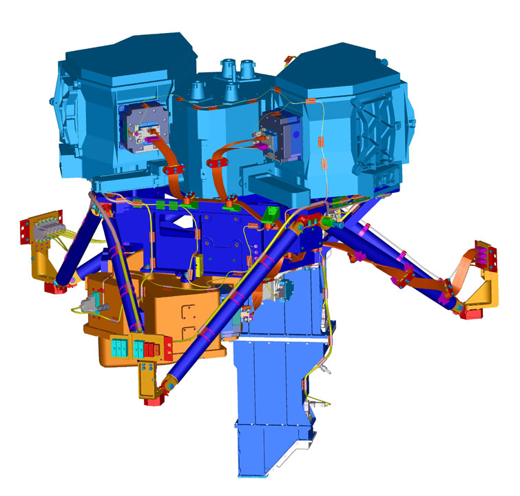
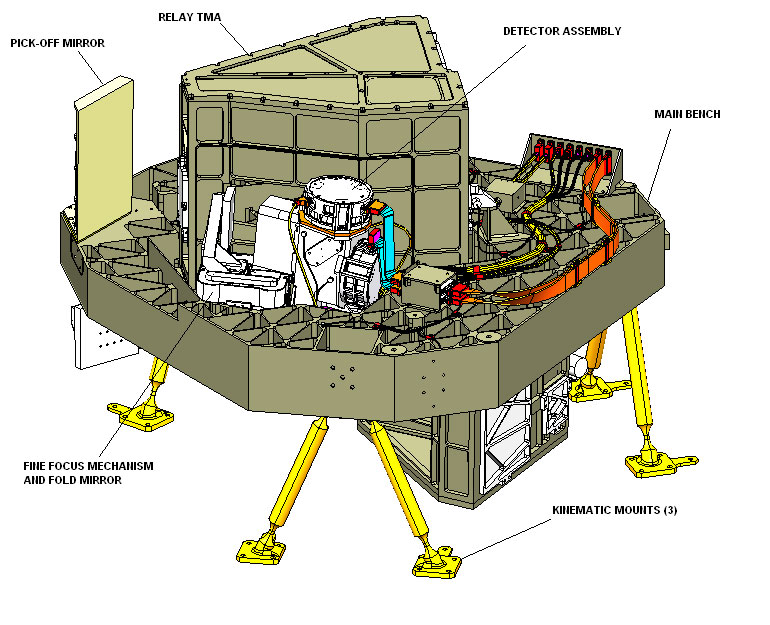
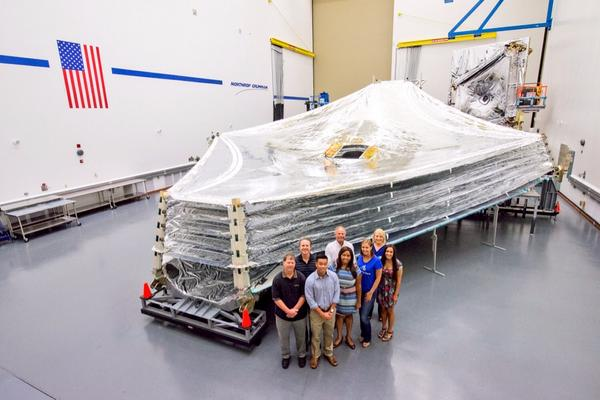
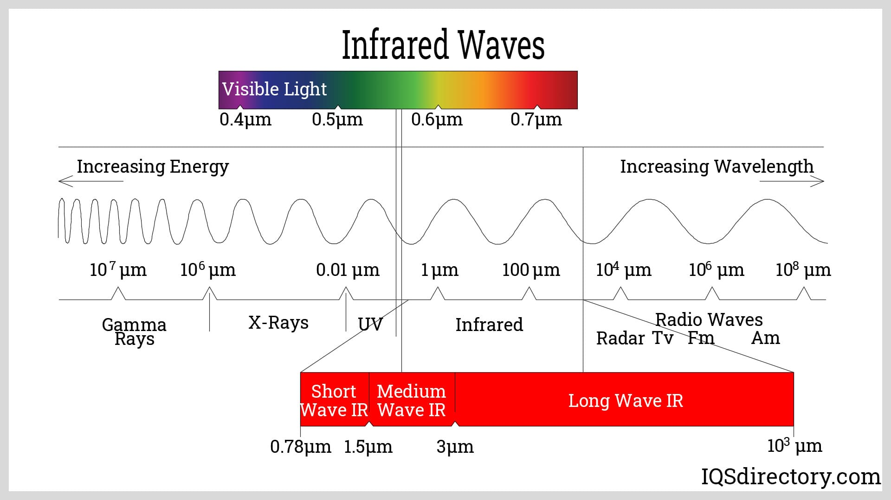
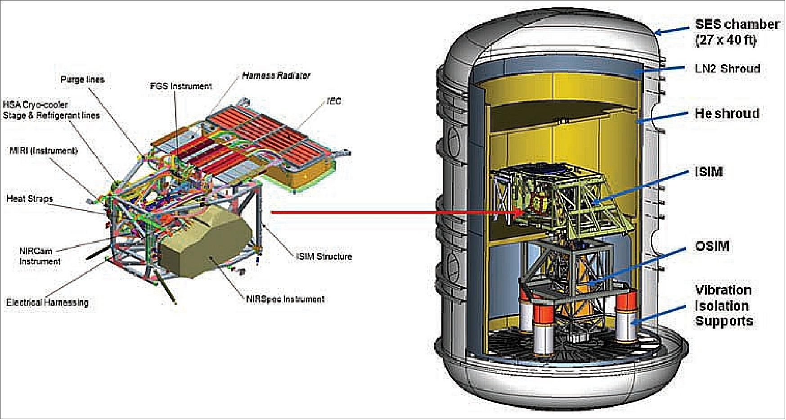
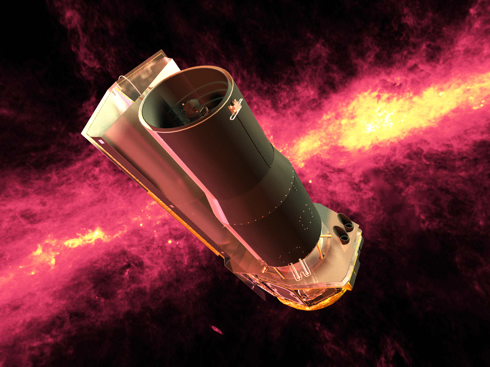

Everything You Need To Know About The James Webb Space Telescope
The aim of the James Webb Space Telescope (JWST) is to explore the cosmos by observing the universe's earliest galaxies, stars, and planets. It seeks to enhance our understanding of the origins of the universe and the formation of galaxies, stars, and planetary systems.

The Physics Behind Webb
The James Webb Space Telescope (JWST) operates based on several key principles of physics. Here are some of the fundamental aspects involved:
Infrared Detection:
The JWST is specifically designed to observe the universe primarily in the infrared part of the electromagnetic spectrum. Infrared light has longer wavelengths than visible light, allowing the telescope to detect and study objects that emit or reflect infrared radiation. This enables the JWST to observe distant and cool objects, such as the earliest galaxies, brown dwarfs, and protoplanetary disks.
Large Primary Mirror:
The JWST features a segmented primary mirror that is over 6 meters (20 feet) in diameter, composed of 18 hexagonal mirror segments. This large mirror collects and focuses incoming light from celestial objects, providing high-resolution images and enabling detailed scientific observations.
Space-based Observations:
Placed in orbit around the second Lagrange point (L2), approximately 1.5 million kilometers (1 million miles) from Earth, the JWST operates away from atmospheric interference and the heat emitted by Earth. This allows for clear observations in the infrared spectrum, as Earth's atmosphere strongly absorbs and distorts infrared light.
Cryogenic Cooling:
To maximize the sensitivity of its instruments, the JWST employs cryogenic cooling. The telescope's instruments, including the primary mirror and the detectors, are cooled using a sunshield that blocks heat from the Sun, and a cryocooler system that maintains extremely low temperatures. This minimizes the thermal noise and allows for the detection of faint infrared signals.
Precision Pointing and Control:
The JWST uses reaction wheels and gyroscopes to precisely control its orientation and pointing in space. This stability is crucial for capturing clear images and data, as even tiny deviations or vibrations can significantly affect observations.
By combining these physical principles, the JWST aims to explore the universe and address key astronomical questions, ranging from the formation of stars and galaxies to the search for habitable exoplanets and the study of the early universe.
Technical Data
Primary Objectives:
The primary objectives of the JWST are to study the formation of stars and galaxies, the evolution of galaxies, the formation of planetary systems, and the potential for life on other planets.
Launch and Deployment:
The JWST was launched from the European Spaceport in Kourou, French Guiana, using an Ariane 5 rocket. The current target launch date was scheduled for October 31, 2021. After launch, it deployed approximately 1.5 million kilometers (about 1 million miles) from Earth, at the second Lagrange point (L2), which provides a stable platform for observations.
Optics and Imaging:
The JWST features a segmented primary mirror composed of 18 hexagonal mirror segments made of lightweight beryllium. The primary mirror has a diameter of 6.5 meters (21.3 feet), making it significantly larger than the Hubble Space Telescope's 2.4-meter (7.9-foot) primary mirror. The larger mirror enables the JWST to gather more light and achieve higher resolution.

Instruments:
The JWST is equipped with four main scientific instruments: a. Near Infrared Camera (NIRCam): It provides imaging and spectroscopic capabilities in the near-infrared range and is primarily used for studying the early universe, the formation of stars, and the detection of exoplanets.
b. Near Infrared Spectrograph (NIRSpec): This instrument specializes in obtaining spectra of distant galaxies, stars, and planetary systems.

c. Mid-Infrared Instrument (MIRI): MIRI operates in the mid-infrared range and is used for studying the formation of planets, the evolution of galaxies, and the detection of the earliest stars.

d. Fine Guidance Sensor/Near InfraRed Imager and Slitless Spectrograph (FGS/NIRISS): This instrument combines a fine guidance sensor for precise pointing and a versatile imager/spectrograph for a wide range of observations, including exoplanet imaging and spectroscopy.

Sunshield:
The JWST is equipped with a five-layer sunshield that is about the size of a tennis court. The sunshield protects the sensitive instruments from the Sun's heat and light, keeping them at cryogenic temperatures to ensure accurate infrared observations.

Infrared Capabilities:
The JWST specializes in observing the universe in the infrared spectrum, which allows it to penetrate dusty regions of space and study objects that emit primarily in the infrared, such as distant galaxies and cool, red stars.

Advanced Technologies:
The JWST incorporates several advanced technologies to enhance its capabilities. For example, it uses microshutters to select specific celestial targets for observation, deployable segmented mirrors for a large primary mirror, and cryocoolers to cool MIRI's detectors to extremely low temperatures.

Predecessors & Other Types of Space Telescopes
Spitzer Space Telescope (SIRTF)
The Spitzer Space Telescope, formerly known as the Space Infrared Telescope Facility (SIRTF), was launched by NASA in 2003. It was the final component of NASA's Great Observatories Program, which also included the Hubble Space Telescope, the Compton Gamma Ray Observatory, and the Chandra X-ray Observatory.
Spitzer was specifically designed to observe the universe in the infrared portion of the electromagnetic spectrum. This wavelength range is crucial for studying objects that emit faint or obscured light, such as distant galaxies, newly forming stars, and planetary systems. By detecting infrared radiation, Spitzer was able to peer through dust clouds, revealing celestial objects and phenomena that would otherwise remain hidden.

Infrared Astronomical Satellite (IRAS)
Spitzer's predecessor, in a broader sense, was the Infrared Astronomical Satellite (IRAS), launched in 1983. IRAS was the first space telescope to survey the entire sky in the infrared range. It provided astronomers with an unprecedented view of the infrared universe and made groundbreaking discoveries, including the detection of dust disks around young stars and the identification of numerous galaxies. Before the era of space-based infrared telescopes, ground-based observations were severely limited by the Earth's atmosphere, which absorbs much of the infrared light. Therefore, the development of space telescopes like IRAS and later Spitzer allowed astronomers to overcome these limitations and unlock a wealth of new knowledge about the universe.